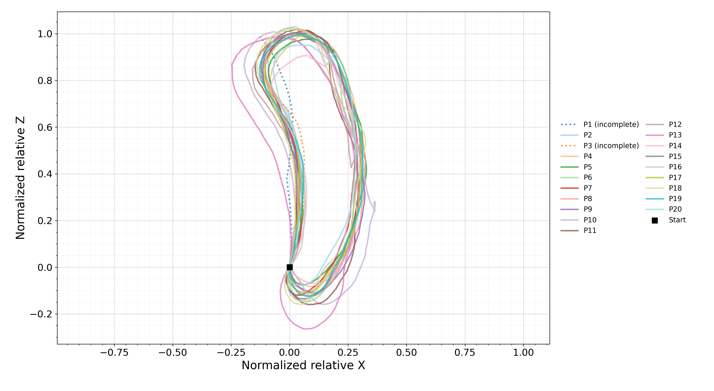
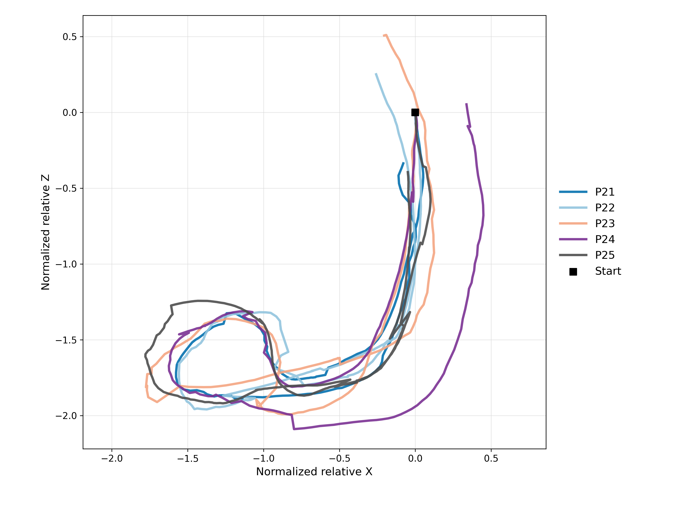

01
Shared Autonomy
The rider remains physically engaged while CyFI assists with navigation steering and emergency braking.
A human-centered shared-autonomy cycling platform supporting accessible outdoor mobility through autonomous steering, emergency braking, and multimodal rider feedback.

CyFI is an accessible semiautonomous cycle designed to enable blind and low-vision riders to cycle independently. The rider provides propulsion and retains manual braking, while CyFI guides navigation steering and handles emergency braking. Audio and vibrotactile feedback communicate upcoming system actions, and riders can request spoken descriptions of their surroundings. CyFI emerged through a two-year longitudinal co-design partnership with a blind mechanical designer and iterative evaluations involving 39 blind and low-vision participants. In the final evaluation, 94% felt safe and 76% trusted autonomous steering. A separate 1.2 km neighborhood ride examined sustained operation across intersections, parked and moving vehicles, stop signs, and changing roadway geometry, while revealing remaining limitations in current robot navigation models.
The rider remains physically engaged while CyFI assists with navigation steering and emergency braking.
Audio and vibrotactile feedback communicate system actions and environmental information during riding.
Evaluation progressed from structured riding environments toward community and sustained neighborhood operation.
Early prototypes supported iterative development of the physical platform, autonomous steering, and rider interaction design.


Key sensing, computation, feedback, and control components integrated into the current CyFI platform.

Steering was empirically calibrated by determining actuator position in relation to vehicle curvature. With the tricycle positioned on a square reference surface, the front wheels were first aligned with the vehicle's longitudinal axis. Across the actuator range, actuator position was stepped in 5% increments and the front-wheel angles relative to the reference surface were measured using a goniometer. These measurements were combined with the tricycle's wheelbase and track width to compute the corresponding Ackermann steering curvature, producing a mapping from desired curvature to actuator position.
The implemented steering controller combines proportional feedback with a feedforward term and a deadband in the controller's native potentiometer units. Commands are updated at 50 Hz, with steering limited to ±30° and a maximum steering rate of 10°/s.
Prompt for scene-description audio feedback initiated via the handle button.
You are describing the surrounding scene for a blind person riding an autonomous tricycle. Provide a concise description that helps the rider quickly understand the most important parts of the environment. Mention only the most relevant nearby objects and features, such as pedestrians, cyclists, vehicles, obstacles, roads, sidewalks, intersections, crossings, and entrances. Use clear relative positions such as “on the left,” “ahead,” and “on the right.” Mention distance only when it can be estimated reliably. Avoid unnecessary visual details and do not speculate about uncertain objects. Keep the description to 1–2 short sentences.
CyFI was developed and evaluated with blind and low-vision participants across formative and final evaluation studies.
| ID | Age | Gender | Race / Ethnicity | Blindness | Prior Cycling | Physical Activity | Days / Week |
|---|---|---|---|---|---|---|---|
| Site 1: Campus (n = 9) | |||||||
| P26 | 64 | Man | White | Blind | Yes | Low | 1–2 |
| P27 | 26 | Woman | White | Blind | Yes | Low | 3–4 |
| P28 | 29 | Woman | White | Blind | Yes | Moderate | 3–4 |
| P29 | 52 | Woman | White | Blind | Yes | Moderate | 3–4 |
| P30 | 64 | Woman | White | Legally blind | Yes | High | 1–2 |
| P31 | 52 | Man | White | Blind | Yes | Moderate | 1–2 |
| P32 | 36 | Man | White | Blind | Yes | Moderate | 3–4 |
| P33 | 73 | Woman | White | Blind | Yes | Moderate | 3–4 |
| P34 | 63 | Woman | Black | Blind | Yes | Low | 3–4 |
| Site 2: Community Organization (n = 5) | |||||||
| P35 | 67 | Woman | White | Blind | Yes | Low | 1–2 |
| P36 | 64 | Man | Hispanic | Legally Blind | Yes | Low | 1–2 |
| P37 | 63 | Woman | White | Blind | Yes | Low | 1–2 |
| P38 | 52 | Woman | White | Blind | Yes | Moderate | 1–2 |
| P39 | 21 | Woman | White | Blind | Yes | Low | 3–4 |
| ID | Age | Gender | Race / Ethnicity | Blindness | Prior Cycling | Physical Activity | Days / Week |
|---|---|---|---|---|---|---|---|
| Site 1: Community Convention (n = 20) | |||||||
| P1 | 78 | Woman | Black | Legally blind | Yes | Low | 3–4 |
| P2 | 71 | Man | Black | Blind | No | Moderate | 1–2 |
| P3 | 35 | Man | Black | Legally blind | Yes | High | 5+ |
| P4 | 36 | Woman | Black | Blind | Yes | Moderate | 1–2 |
| P5 | 72 | Woman | Black | Blind | Yes | High | 3–4 |
| P6 | 38 | Man | White | Blind | Yes | Moderate | 3–4 |
| P7 | 50 | Man | White | Blind | No | Moderate | Rarely |
| P8 | 50 | Man | Black | Blind | Yes | High | 3–4 |
| P9 | 49 | Woman | Black | Blind | Yes | High | 5+ |
| P10 | 56 | Man | Black | Blind | No | Moderate | 3–4 |
| P11 | 42 | Man | White | Blind | Yes | High | 3–4 |
| P12 | 17 | Man | White | Blind | Yes | Moderate | 1–2 |
| P13 | 35 | Man | Black | Blind | Yes | Moderate | 5+ |
| P14 | 47 | Man | Black | Blind | Yes | Low | 3–4 |
| P15 | 46 | Woman | Black | Blind | Yes | Moderate | 1–2 |
| P16 | 69 | Man | Black | Blind | Yes | High | 3–4 |
| P17 | 50 | Woman | Black | Blind | Yes | Moderate | 3–4 |
| P18 | 37 | Woman | White | Blind | Yes | Moderate | 5+ |
| P19 | 46 | Man | White | Legally blind | Yes | High | 5+ |
| P20 | 65 | Woman | Black | Legally blind | Yes | None | 1–2 |
| Site 2: Community Organization (n = 5) | |||||||
| P21 | 19 | Woman | White | Blind | – | High | 1–2 |
| P22 | 31 | Woman | Asian | Blind | No | High | 1–2 |
| P23 | 36 | Woman | White | Blind | Yes | Low | 1–2 |
| P24 | 84 | Woman | White | Legally blind | No | High | 1–2 |
| P25 | 41 | Man | Hispanic | Legally blind | Yes | High | 5+ |
Real-world bicycle sensor streams are synchronized to construct RGB observations paired with frame-level future trajectories for navigation-model adaptation and evaluation.
An anonymized forward-facing visualization of synchronized real-world riding data with future-trajectory waypoint annotations.
Note: Street and location-identifying signs are conservatively blurred using a low detection threshold to ensure anonymity while preserving trajectory waypoint visibility.
For model experiments, we record sensor streams to obtain synchronized RGB observations and frame-level trajectory labels from high-precision GNSS/IMU.
RTK-fixed solutions provide centimeter-level position anchors and are supplemented with validated PPK solutions when available. Between the 5 Hz GNSS/PPK position anchors, dense frame-level positions are obtained by integrating velocity measurements.
GNSS latitude, longitude, and height measurements are transformed into a local East-North-Up (ENU) coordinate frame. Camera frames are synchronized with navigation measurements in GPS time using host-side timestamp logs.
For each RGB frame at time t, an 8-waypoint future trajectory is sampled at 3 Hz following the OmniVLA setting.
Let Δn and Δe denote future displacement in ENU coordinates, and let θt denote bicycle travel heading at time t.
x and y denote the forward and left directions, respectively.
ψ denotes local trajectory heading computed from consecutive future waypoints. The eight waypoints span a 2.4 s prediction horizon.
Navigation models are evaluated in interactive environments reconstructed from bicycle-perspective observations using Vid2Sim. Fine-tuning on the collected bicycle-navigation data substantially improves pseudo closed-loop navigation performance.
Pseudo closed-loop simulation rollouts across seven evaluated navigation policies. Videos are displayed at 2× playback speed for faster qualitative comparison while preserving the original rollout sequence.
Scroll or Swipe Horizontally to Compare All Seven Policies →
We compare models with and without target points as input on BikeScenes and our held-out test split. For all models, the target point is defined as the position 2.4 s ahead. ADE and FDE are reported for both datasets. Lower is better.
| Model | Size | BikeScenes | Our Dataset | ||
|---|---|---|---|---|---|
| ADE ↓ | FDE ↓ | ADE ↓ | FDE ↓ | ||
| w/o Target Point | |||||
| Alpamayo 1.5 | 10B | 6.53 | 15.99 | 3.24 | 6.69 |
| OmniVLA | 7.5B | 1.41 | 3.62 | 2.31 | 3.31 |
| OmniVLA-Edge | 50M | 1.59 | 2.84 | 2.80 | 6.67 |
| OmniVLA-FT | 7.5B | 1.22 | 1.75 | 1.70 | 3.01 |
| OmniVLA-Edge-FT | 50M | 1.31 | 1.97 | 1.89 | 3.34 |
| w/ Target Point | |||||
| Alpamayo 1.5 | 10B | 6.58 | 16.15 | 3.01 | 6.17 |
| OmniVLA | 7.5B | 1.20 | 2.91 | 2.00 | 2.61 |
| OmniVLA-Edge | 50M | 1.17 | 1.99 | 2.25 | 4.22 |
| Modular Pipeline | 5M | 1.40 | 2.74 | 2.15 | 3.23 |
| OmniVLA-FT | 7.5B | 0.83 | 1.49 | 1.25 | 2.16 |
| OmniVLA-Edge-FT | 50M | 0.46 | 0.70 | 1.48 | 2.56 |
Models are evaluated in interactive environments reconstructed using Vid2Sim from BikeScenes and our collected data. We compare models with and without target points as input. For all models, the target point is defined as the position 3 m ahead. We report collision rate and route completion (RC).
| Model | Size | Collision (%) ↓ | RC (%) ↑ |
|---|---|---|---|
| w/o Target Point | |||
| Alpamayo 1.5 | 10B | 4.01 | 55.64 |
| NaVILA | 8B | 2.23 | 68.74 |
| OmniVLA | 7.5B | 3.74 | 50.87 |
| OmniVLA-Edge | 50M | 3.92 | 50.18 |
| OmniVLA-FT | 7.5B | 1.11 | 78.46 |
| OmniVLA-Edge-FT | 50M | 1.15 | 74.37 |
| w/ Target Point | |||
| Alpamayo 1.5 | 10B | 10.85 | 22.67 |
| NaVILA | 8B | 2.35 | 68.75 |
| OmniVLA | 7.5B | 1.21 | 76.20 |
| OmniVLA-Edge | 50M | 2.70 | 65.84 |
| Modular Pipeline | 5M | 2.14 | 61.46 |
| OmniVLA-FT | 7.5B | 0.25 | 89.83 |
| OmniVLA-Edge-FT | 50M | 0.21 | 90.93 |
We evaluate robustness to simulated GPS localization uncertainty by perturbing target-point locations with zero-mean Gaussian noise with a standard deviation of 1 m.
We perturb target points with zero-mean Gaussian noise with a standard deviation of 1 m to simulate realistic GPS localization noise. For all models, the clean target point is defined as the position 2.4 s ahead. ADE and FDE are reported on BikeScenes and our held-out test split. Lower is better.
| Model | Size | BikeScenes | Our Dataset | ||
|---|---|---|---|---|---|
| ADE ↓ | FDE ↓ | ADE ↓ | FDE ↓ | ||
| Alpamayo 1.5 | 10B | 6.56 | 16.12 | 3.46 | 7.13 |
| OmniVLA | 7.5B | 1.21 | 2.97 | 2.06 | 2.79 |
| OmniVLA-Edge | 50M | 1.20 | 2.01 | 2.35 | 4.70 |
| Modular Pipeline | 5M | 1.58 | 2.79 | 2.36 | 3.43 |
| OmniVLA-FT | 7.5B | 1.08 | 1.96 | 1.25 | 2.21 |
| OmniVLA-Edge-FT | 50M | 0.85 | 1.43 | 1.54 | 2.69 |
Models are evaluated in interactive environments reconstructed using Vid2Sim. Target points are perturbed with zero-mean Gaussian noise with a standard deviation of 1 m. For all models, the clean target point is defined as the position 3 m ahead. We report collision rate and route completion (RC).
| Model | Size | Collision (%) ↓ | RC (%) ↑ |
|---|---|---|---|
| Alpamayo 1.5 | 10B | 11.62 | 19.85 |
| NaVILA | 8B | 2.41 | 67.83 |
| OmniVLA | 7.5B | 2.60 | 57.81 |
| OmniVLA-Edge | 50M | 2.84 | 62.93 |
| Modular Pipeline | 5M | 2.53 | 57.68 |
| OmniVLA-FT | 7.5B | 0.34 | 88.79 |
| OmniVLA-Edge-FT | 50M | 0.39 | 88.16 |
All 25 final-evaluation participants completed their routes. Across participant rides, the median travel distance was 141.59 m (IQR = 155.87 m), the median riding speed was 0.50 m/s (IQR = 0.29 m/s), and participants requested a median of three on-demand environmental descriptions per ride.
| Measure / Site | Before Ride | During Ride | After Ride |
|---|---|---|---|
| Community Convention Heart Rate | 88.15 ± 12.00 BPM | 96.11 ± 14.34 BPM | 97.61 ± 15.91 BPM |
| Community Organization Heart Rate | 101.18 ± 12.39 BPM | 109.95 ± 15.09 BPM | 107.28 ± 11.93 BPM |
| Participant Ride Distance | Median 141.59 m · IQR 155.87 m | ||
| Participant Riding Speed | Median 0.50 m/s · IQR 0.29 m/s | ||
Heart-rate changes are reported descriptively and are not interpreted as evidence of a particular exercise intensity.
Participant trajectories are direction-aligned to a common route frame and normalized relative to route displacement.
Direction-aligned trajectories from the twenty participants evaluated at Site 1.

Direction-aligned trajectories from the five participants evaluated at Site 2.



Representative participant riding session from the final evaluation.
Longer-route evaluations examine sustained operation beyond the shorter participant sessions.
An anonymized short real-world snippet showing the rider briefly raising both hands while CyFI continues the maneuver.
An anonymized third-person view of CyFI during sustained real-world riding across a residential neighborhood route.